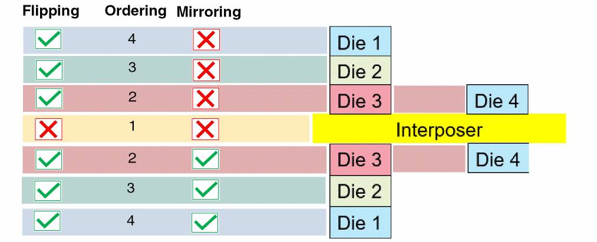
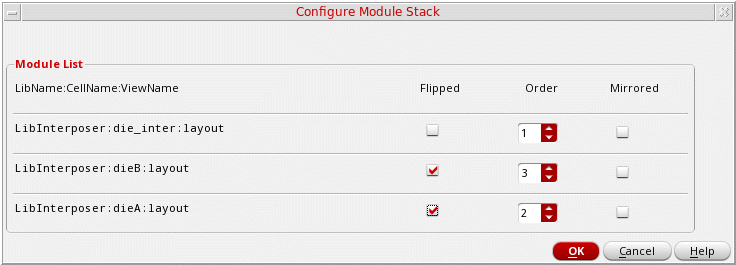
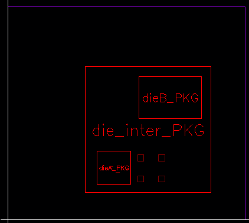

Configuring a Stack
Before you start with bump management tasks, it is important to configure a stack. The following diagram illustrates a stack with dies vertically mounted on either sides of an interposer. To configure a die stack, you define the following die properties:
- Flipping: Specifies whether the dies are to be used as they are or must be flipped. In the following example, the interposer is used as it is, whereas the dies mounted above and below the interposer are flipped.
- Ordering: Specifies the sequence in which dies are to be stacked. The die order is assigned from the center. Therefore, the interposer is considered the first die (order 1), followed by the subsequent dies.
-
Mirroring: Specifies the orientation of dies. In the following illustration, the flipped dies that are stacked above the interposer are not mirrored, whereas the ones stacked below the interposer are.

- Add the required dies to the design.
-
Click Module – Configure Module Stack to display the Configure Module Stack form.
All dies in the design are listed in the Module List. - Select Flipped for dies to be flipped in the stacked assembly. For example, for a design where two dies are mounted on an interposer, select Flipped for the two dies.
- Use Order to specify the sequence in which the dies are to be stacked.
- Select Mirrored for dies to be mirrored.
-
Click OK to apply the settings.

Related Topics
Die Operations
A stacked module comprises dies that are integrated vertically, aligned, and bonded using bumps. Bump management tasks are an integral part of the Virtuoso Stacked Silicon solution. Bump management tasks can be categorized into die operations and inter-die operations. Die operations are performed on individual dies and inter-die operations impact two or more dies.
In Virtuoso, bump management tasks can be run only when the design is open in Edit-In-Concert mode. In this mode, die commands are available from the tabs corresponding to individual dies and inter-die commands are available from the package or container tab.
Related Topics
Assigning Connectivity between Bumps
Updating Bumps to the Abstract View
Return to top